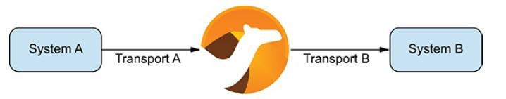
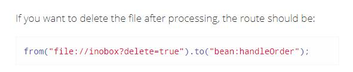

Από την σημερινή δωρεάν ενότητα στο Quarkus ξεκινάμε μια σειρά
μαθημάτων τα οποία θα καλύψουν θέματα από system integration
μέχρι microservices. Θα πρέπει να έχετε παρακολουθήσει κάποιο
σεμινάριο στην Java ή να έχετε διαβάσει τις ενότητες
στο
https://kassapoglou.github.io/java/java-programming.html
για να μπορέσετε να ακολουθήσετε τα μαθήματα. Τα παραδείγματα
θα είναι απλά και θα ακολουθούνται από αρκετή θεωρία όπως άλλωστε
είναι και η λογική αυτού του site. Ας ξεκινήσουμε λοιπόν.
Το πιο κοινό σενάριο όταν αναλαμβάνεται την δημιουργία κώδικα
σε enterprise συστήματα είναι να καταφέρετε να ενώσετε την
καινούργια εφαρμογή που δημιουργείται με υπάρχοντα συστήματα.
Αυτό σε τεχνική ορολογία ονομάζεται system integration. Η πιο
πιθανή σας προσέγγιση δεν θα είναι να κατανοήσετε την λειτουργία
του συστήματος που υπάρχει ήδη αλλά πως θα μπορέσετε πετυχημένα
να ανταλλάξετε δεδομένα μαζί του. Δεν θα ήταν καθόλου συνετό,
(αν και δεν είναι ακατόρθωτο) να δημιουργήσετε από το μηδέν τον
κώδικα που ενοποιεί τα συστήματα, γιατί θα ήταν μια δαπανηρή προσπάθεια
και μπορεί και να μην είχε και απόλυτη επιτυχία. Η καλύτερη σας επιλογή
θα ήταν να ψάξετε για ένα έτοιμο framework που μπορεί να σας προσφέρει
με τον ελάχιστο δυνατόν κώδικα τις υπηρεσίες που ζητάτε. Αυτό το
framework ονομάζεται Apache Camel και είναι πολύ γνωστό ανάμεσα
στους προγραμματιστές για τις δυνατότητες του.
Το Camel framework στηρίζεται σε έναν μηχανισμό δρομολόγησης
(routing engine builder) ο οποίος αφού διαβάσει τα δεδομένα
από κάποιο προκαθορισμένο σημείο, τα επεξεργάζεται και αποφασίζει
σε ποιον προορισμό ή προορισμούς να στείλει με βάση τους κανόνες
δρομολόγησης που του έχουμε ορίσει. Η γλώσσα στην οποία
στηρίζεται το Camel framework για να ορίσει τους κανόνες δρομολόγησης
ονομάζεται DSL (Domain-specific language) και είναι πολύ απλή
και στηρίζεται στην λογική των business processes.
Μια από τις θεμελιώδεις αρχές του Camel είναι ότι δεν απαιτεί
να μετατραπούν τα δεδομένα σε κάποια συγκεκριμένη μορφή για
να μπορέσει να τα επεξεργαστεί και να αποφασίσει την δρομολόγησή τους.
Αυτό επιτρέπει στο Camel να μπορεί να χρησιμοποιήσει το ίδιο API
ανεξάρτητα από το πρωτόκολλο ή τον τύπο δεδομένων που χρησιμοποιούνται
σε κάποιο σύστημα. Μέχρι τώρα, το Camel προσφέρει συμβατότητα με
περισσότερα από 280 πρωτόκολλα και τύποι δεδομένων. Πως όμως
δημιουργούμε ένα απλό Camel Route?
Βασικά, πριν ξεκινήσουμε να δημιουργήσουμε τον πρώτο μας route,
θα πρέπει να αναφέρουμε τι εργαλεία χρειαζόμαστε για να μπορέσουνε
να αναπτύξουμε τα προγράμματα μας.
1. Χρειάζεται να έχετε εγκαταστήσει Java 1.8 στον υπολογιστή σας
2. Είναι απαραίτητο κάποιο μοντέρνο IDE. Στα δικά μας
παραδείγματα θα χρησιμοποιήσω την δωρεάν έκδοση του IntelliJ (Community Edition).
3. Όλα μας τα project θα χρησιμοποιήσουν Maven. Μπορείτε
να χρησιμοποιήσετε το ήδη ενσωματωμένο στο IntelliJ Maven ή να
ενσωματώσετε την δική σας έκδοση.
4. Θα χρησιμοποιήσουμε το Quarkus σαν πλατφόρμα
ανάπτυξης των προγραμμάτων μας. Αργότερα θα αναπτύξουμε
και microservices σε αυτή την πλατφόρμα.
Σαν πρώτο βήμα, πηγαίνουμε στο
https://code.quarkus.io/ όπου
μπορούμε να δημιουργήσουμε ένα project με τις απαραίτητες
βιβλιοθήκες αρκεί να τις επιλέξουμε. Για αρχή, ας αλλάξουμε
(επάνω αριστερά) το όνομα του Group και του Artifact. Εννοείτε
ότι μπορείτε να δώσετε ότι ονόματα θέλετε.

Έπειτα, πηγαίνετε στην λίστα με τις βιβλιοθήκες και κάτω από
την κατηγορία Integration επιλέγετε το Camel Quarkus
Core και Camel Quarkus File.

Τώρα πατήστε στο κουμπί “Generate your application”. Αυτό θα σας
ετοιμάσει και θα σας κατεβάσει στον υπολογιστή σας ένα έτοιμο
Maven project σε zip μορφή.

Αφού κατεβάσετε το αρχείο, βρείτε το φάκελο στον οποίο έχει
αποθηκευτεί και αποσυμπιέστε το. Τώρα μπορείτε να ξεκινήσετε
το IntelliJ. Πηγαίνετε στο File → Open και βρείτε το φάκελο
με το maven project που κάνατε unzip.

Το αρχείο ExampleResource δεν μας χρειάζεται. Αυτό είναι ένα απλό
παράδειγμα REST web service. Διαγράφουμε λοιπόν την κλάση ExampleResource
και δημιουργούμε μια δική μας κλάση με το όνομα MyRoutes που περιέχει τον εξής κώδικα:
MyRoutes.java
package com.mycompany;
import org.apache.camel.builder.RouteBuilder;
public class MyRoutes extends RouteBuilder {
@Override
public void configure() throws Exception {
from("file:E:\\testdata1?noop=true").to("file:E:\\testdata2");
}
}

Πριν προχωρήσουμε να κάνουμε build το project με το Maven και να
το τρέξουμε, ας δούμε λίγο τι έχουμε γράψει σαν κώδικα.
Για να μπορέσει μια κλάση να χρησιμοποιήσει τον μηχανισμό δρομολόγησης
του Camel θα πρέπει να κληρονομεί από την κλάση RouteBuilder.
Αυτή η κληρονομικότητα μας αναγκάζει να γράψουμε κώδικα για μία
και μοναδική μέθοδο που περιέχει η RouteBuilder κλάση και ονομάζεται
configure( ). Μέσα στην μέθοδο configure( ), με την χρήση της DSL
γλώσσας μπορούμε να ορίσουμε από που θα διαβάζουμε τα μηνύματα και
που θα τα στέλνουμε. Το route ξεκινάει πάντα με την λέξη from και
μετά ακολουθούν όσα to χρειαζόμαστε μέχρι να ορίσουμε όλο το route.
Στο παράδειγμά μας, το route είναι απλό, οπότε μεταφέρουμε ένα αρχείο
από έναν φάκελο σε έναν άλλο φάκελο. To noop=true δίνει την ιδιότητα
στο αρχείο να μην διαγραφεί από τον πρώτο φάκελλο, αλλά να αντιγραφεί
και το αντίγραφό του είναι εκείνο που θα μεταφερθεί στον δεύτερο φάκελο.
Το παράδειγμα δείχνει σε φακέλους που ήδη υπάρχουν στον δικό μου
σκληρό δίσκο. Θα πρέπει να αλλάξετε το path να δείχνει σε
τοπικούς φακέλους στον υπολογιστή σας.
Τώρα όσο αφορά το file αυτό στο Camel ονομάζεται
endpoint γιατί είναι το σημείο όπου μπορούμε ή να
στείλουμε ή να λάβουμε μηνύματα. Κάθε endpoint έχει
πάρα πολλές ιδιότητες για αυτό και ο καλύτερος σας
οδηγός σε αυτό είναι το documentation
https://camel.apache.org/components/latest/file-component.html .
Εμείς, στο παράδειγμα, χρησιμοποιήσαμε την απλή ιδιότητα noop.

Έχουμε αρκετή θεωρία να καλύψουμε στις επόμενες ενότητες αλλά
για τώρα νομίζω είμαστε σε ικανοποιητικό επίπεδο κατανόησης του
route και πως λειτουργεί το απλό πρόγραμμα μας. Ας το δούμε λοιπόν
στην πράξη.
Πατήστε (δεξιά επάνω) το Maven κουμπί και μετά το εικονίδιο με το check mark.

Στο παράθυρο που ανοίγει δίνουμε την εντολή mvn quarkus:dev και πατάμε ENTER να ξεκινήσει το project μας.

Όταν δείτε το δείτε το μήνυμα installed features τότε το project τρέχει και μπορούμε να δοκιμάσουμε την μεταφορά αρχείων.

Δημιουργήστε ένα απλό txt αρχείο και πετάξτε το μέσα στον πρώτο φάκελο.
Αμέσως θα ενεργοποιηθεί το route του Camel και θα το μεταφέρει στον
δεύτερο φάκελο. Αργότερα θα βάλουμε και απλά logs components στα routes
για να μπορέσουμε να παρακολουθούμε το αποτέλεσμα και από την κονσόλα του Quarkus.
Από την πιο πάνω αντίδραση του προγράμματος, είναι εύκολο
να καταλάβουμε ότι υπάρχει εσωτερικά στο Camel ένας
routing μηχανισμός που, αφού επιλέξει σε ποιο μήνυμα
θα ενεργήσει με βάση τα κριτήρια που έχουμε θέσει, ενεργοποιείται
και πράττει επάνω σε αυτό. Ο μηχανισμός του Route είναι συνδυασμός
δύο πραγμάτων: (α) μια domain-specific γλώσσα προγραμματισμού και (β)
υλοποίηση συγκεκριμένων enterprise integration patterns.
Η Camel domain-specific language (DSL) προσφέρει την
ευελιξία να γραφτεί χρησιμοποιώντας διάφορες γλώσσες
προγραμματισμού όπως Java, Scala, κτλ. Ο κύριος σκοπός ύπαρξης της
DSL είναι να μπορεί να ελευθερώνει τον προγραμματιστή από την γλώσσα
προγραμματισμού (κάνοντας την πιο εύκολη στην σύνταξη) έτσι ώστε να
μπορεί ο προγραμματιστής να συγκεντρωθεί στην πρακτική λύση του εκάστοτε
προβλήματος που συνήθως είναι integration πρόβλημα. Όπως ήδη είδαμε στο
παράδειγμα, με την Java και με απλές εντολές όπως from και to μπορέσαμε
να ορίσουμε ένα ολοκληρωμένο route.
Τώρα για να καταλάβουμε λίγο καλύτερα τα Enterprise Integration Patterns
(EIP), καλό θα ήταν ρίξουμε μια γρήγορη ματιά στο εξής
site:
https://camel.apache.org/manual/latest/enterprise-integration-patterns.html .
Αν κάνετε κλικ σε κάποιο από τα Patterns, θα δείτε ένα διάγραμμα και ένα δείγμα κώδικα που
το ακολουθεί. Σε μελλοντικές ενότητες θα αναφέρουμε σε ποια EIPs αναφερόμαστε κάθε φορά στα
παραδείγματα μας.

Michail Kassapoglou Admin
Γεια σας, είμαι ο Μιχάλης Κασάπογλου και θα σας διδάξω με τον ποιο απλό
τρόπο να προγραμματίζετε σε Apache Camel. Ασχολούμαι με την τεχνική εκπαίδευση
σε διάφορες πλατφόρμες, λειτουργικά συστήματα και γλώσσες προγραμματισμού
πάνω από 20 έτη. Κατέχω έναν αρκετά μεγάλο αριθμό πιστοποιήσεων Microsoft και Oracle
και σαν Τraining Lead στην Intrasoft έχω την δυνατότητα να αναβαθμίζω συνεχώς
τις γνώσεις μου και να έχω άμεση επαφή με αληθινά projects και εξειδικευμένες μεθόδους
ανάπτυξης εφαρμογών που έχουν υψηλές απαιτήσεις.
Για τυχόν ερωτήσεις σας μπορείτε να επικοινωνήσετε μαζί μου
στο Michail.Kassapoglou@gmail.com
Σας ευχαριστώ που επισκεφτήκατε την ιστοσελίδα μου.